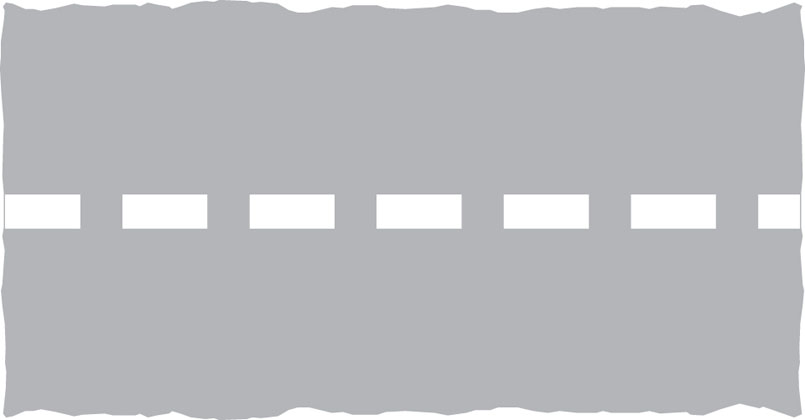
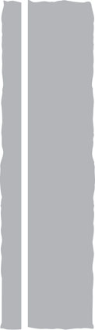
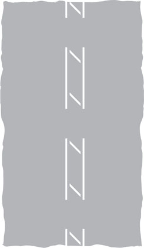
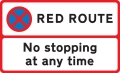
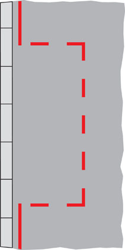
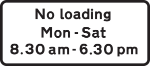

5. Road markings 道路標記
Road markings used, including those across the carriageway, along the carriageway, along the edge of the carriageway, on the kerb or at the edge of the carriageway and other road markings.
使⽤的道路標記，包括橫穿⾞道、沿⾞道、沿⾞道邊緣、路緣或⾞道邊緣的標記以及其他道路標記。
I. ACROSS THE CARRIAGEWAY 穿過行車道

Stop line at signals or police control
在號誌或警察控制處停⾞

Stop line at ‘Stop’ sign
在「停⽌」標誌處停車

Stop line for pedestrians at a level crossing
平交道的⾏⼈停⾞線

Give way to traffic on major road (can also be used at mini roundabouts)
讓路給主要道路上的⾞輛 (也可在⼩型環島處使⽤)

Give way to traffic from the right at a roundabout
在環島處為右側⾞輛讓路

Give way to traffic from the right at a mini-roundabout
在⼩型環島處為右側⾞輛讓路
II. ALONG THE CARRIAGEWAY 沿著行車道

Edge line 邊緣線
Centre line See Rule 12 中⼼線 參⾒規則 127
Hazard warning line See Rule 127 危險警告線 請參閱規則 127

Double white lines See Rules 128 and 129
雙⽩線 參⾒規則 128 和 129
Double white lines See Rules 128 and 129
雙⽩線 參⾒規則 128 和 129
Edge line 邊緣線
Centre line See Rule 12 中⼼線 參⾒規則 127
Hazard warning line See Rule 127
危險警告線 請參閱規則 127
Double white lines See Rules 128 and 129
雙⽩線 參⾒規則 128 和 129
Double white lines See Rules 128 and 129
雙⽩線 參⾒規則 128 和 129

See Rule 130 參⾒規則 130

Lane line See Rule 131
⾞道線 請參閱規則 131
III. ALONG THE EDGE OF THE CARRIAGEWAY 沿著行車道邊緣
Waiting restrictions 等待限制
Waiting restrictions indicated by yellow lines apply to the carriageway, pavement and verge. You may stop to load or unload (unless there are also loading restrictions as described below) or while passengers board or alight. Double yellow lines mean no waiting at any time, unless there are signs that specifically indicate seasonal restrictions. The times at which the restrictions apply for other road markings are shown on nearby plates or on entry signs to controlled parking zones. If no days are shown on the signs, the restrictions are in force every day including Sundays and Bank Holidays. White bay markings and upright signs (see below) indicate where parking is allowed.
黃線指⽰的等待限制適⽤於⾞道、⼈⾏道和邊緣。您可以在乘客上下⾞時停下來裝卸 (除非還有如下所述的裝載限制)。雙黃線表⽰任何時候都無需等待，除非有明確指⽰季節性限制的標誌。其他道路標記的限制時間顯⽰在附近的⾞牌或受控停⾞區的入⼝標誌上。如果標誌上沒有顯⽰⽇期，則限制每天都有效，包括星期⽇和銀⾏假⽇。⽩⾊海灣標記和直立標誌 (⾒下文) 指⽰允許停⾞的位置。

No waiting at any time
任何時間都無需等待

No waiting during times shown on sign
標牌上顯⽰的時間內無需等待

Waiting is limited to the duration specified during the days and times shown
等待僅限於顯⽰的⽇期和時間中指定的持續時間
Red Route stopping controls
紅⾊路線停⽌控制
Red lines are used on some roads instead of yellow lines. In London the double and single red lines used on Red Routes indicate that stopping to park, load/unload or to board and alight from a vehicle (except for a licensed taxi or if you hold a Blue Badge) is prohibited. The red lines apply to the carriageway, pavement and verge. The times that the red line prohibitions apply are shown on nearby signs, but the double red line ALWAYS means no stopping at any time. On Red Routes you may stop to park, load/unload in specially marked boxes and adjacent signs specify the times and purposes and duration allowed. A box MARKED IN RED indicates that it may only be available for the purpose specified for part of the day (eg between busy peak periods). A box MARKED IN WHITE means that it is available throughout the day.
有些道路使⽤紅線代替黃線。在倫敦，紅⾊路線上使⽤的雙紅線和單紅線表⽰禁⽌停⾞、裝卸或上下⾞輛 (有執照的計程⾞或持有藍⾊徽章的除外)。紅線適⽤於⾞道、⼈⾏道和邊緣。附近的標誌上顯⽰了紅線禁令的適⽤時間，但雙紅線始終意味著任何時候都不能停⾞。在紅⾊路線上，您可以在專⾨標記的盒⼦中停⾞、裝卸貨物，相鄰的標誌會註明允許的時間、⽬的和持續時間。紅⾊框表⽰它只能⽤於⼀天中指定的部分時間 (例如繁忙⾼峰時段之間)。標有⽩⾊的盒⼦表⽰全天可⽤。
RED AND SINGLE YELLOW LINES CAN ONLY GIVE A GUIDE TO THE RESTRICTIONS AND CONTROLS IN FORCE AND SIGNS, NEARBY OR AT A ZONE ENTRY, MUST BE CONSULTED.
紅線和單黃線只能為有效的限制和控制提供指導，並且必須查閱附近或區域入⼝處的標誌。

No stopping at any time
任何時候都不能停下來

No stopping during times shown on sign
標誌牌所⽰時間內不得停⾞

Parking is limited to the duration specified during the days and times shown
停⾞僅限於所⽰⽇期和時間指定的持續時間


Only loading may take place at the times shown for up to a maximum duration of 20 mins
僅可在顯⽰的時間進⾏加載，最⻑持續時間為 20 分鐘
IV. ON THE KERB OR AT THE EDGE OF THE CARRIAGEWAY
在路邊或車道邊緣
Loading restrictions on roads other than Red Routes
紅⾊路線以外道路的裝載限制
Yellow marks on the kerb or at the edge of the carriageway indicate that loading or unloading is prohibited at the times shown on the nearby black and white plates. You may stop while passengers board or alight. If no days are indicated on the signs the restrictions are in force every day including Sundays and Bank Holidays.
路邊或⾞道邊緣的黃⾊標記表⽰禁⽌在附近⿊⽩標誌上所⽰的時間裝卸貨物。當乘客上下⾞時，您可以停下來。如果標誌上沒有註明⽇期，則限制每天都有效，包括星期⽇和銀⾏假⽇。
ALWAYS CHECK THE TIMES SHOWN ON THE PLATES.
請務必檢查銘牌上顯⽰的時間。
Lengths of road reserved for vehicles loading and unloading are indicated by a white ‘bay’ marking with the words ‘Loading Only’ and a sign with the white on blue ‘trolley’ symbol. This sign also shows whether loading and unloading is restricted to goods vehicles and the times at which the bay can be used. If no times or days are shown it may be used at any time. Vehicles may not park here if they are not loading or unloading.
預留⽤於⾞輛裝卸的道路⻑度由帶有“僅裝載”字樣的⽩⾊“海灣”標記和帶有藍底⽩字“⼿推⾞”符號的標誌表⽰。該標誌還顯⽰是否限制貨⾞裝卸以及可以使⽤該海灣的時間。如果沒有顯⽰時間或⽇期，則可以隨時使⽤。⾞輛如未裝卸，不得在此停放。

No loading or unloading at any time
任何時候都不能裝卸

No loading or unloading at the times shown
禁⽌在所⽰時間裝卸


Loading bay 裝貨區
V. OTHER ROAD MARKINGS
其他道路標記

Keep entrance clear of stationary vehicles, even if picking up or setting down children
即使接送兒童，也請確保入⼝處沒有靜⽌的⾞輛

Warning of 'Give Way' just ahead
前⽅「讓路」警告

Parking space reserved for vehicles named
為指定⾞輛預留的停⾞位
See Rule 243 參⾒規則 243

See Rule 141 參⾒規則 141

Box junction - See Rule 17
盒式連接器 - 請參閱規則 174
Do not block that part of the carriageway indicated
請勿阻塞所⽰的⾞道部分

Indication of traffic lanes
⾞道指⽰